1 area 1 | 2 area 4 | 3 area 9 | 4 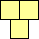 area 12 | 5 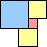 area 18 | 6 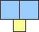 area 22 | 7 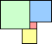 area 30 | 8 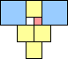 area 35 (Corey Plover) | 9 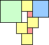 area 43 |
1. Square Chain Tilings
We say a tiling of a square by integer-sided squares is a square chain tiling if every square of side s>1 shares part of a side with a square of s-1. For each n, we are interested in finding the square chain tiling of a square of side n using the fewest number of squares.
What are the minimal square chain tilings for various squares? In particular, what is the fewest number of squares you can find for a chain tiling of a square of side 100?
What are the best chain tilings of rectangles by squares? How about equilateral triangle chain tilings?
2. Square Bridges
A square bridge is a collection of integer-sided squares on a grid so that a) every square but one rests partly on another square, and b) the tops of the squares which do not have a square resting on them are level. The width of a square bridge is the length of the top edge. For each n, we are interested in finding the square bridge of width n whose combined area is as small as possible.
What are the minimal square bridges for various n? Do squares of side 5 or greater ever appear in the optimal bridges? What is the smallest possible area of a square bridge of width 100?
3. Covering Squares Without Overlap
The September 2000 problem investigated covering the largest square using squares of sides 1 through n. This month we are interested in the largest square that can be covered by non-overlapping squares of sides 1 through n.
What are the best coverings for various n? In particular, what is the smallest n for which non-overlapping squares of sides 1 through n can cover a square of side 100? What is the largest area rectangle that non-overlapping squares of sides 1 through n can cover?
4. Sorted Square Packings
A sorted square packing is a packing of a square with integer-sided squares so that all squares above and to the right of a square are strictly smaller. For each n, we are interested in the sorted square packing of a square of side n with the smallest wasted area.
What are the best packings for various squares? In particular, what is the best sorted square packing of a square of side 100?
| 1 1 square | 2 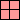 4 squares | 3 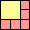 6 squares | 4 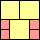 7 squares | 5 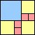 8 squares | 6 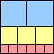 11 squares | 7 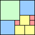 9 squares | 8 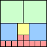 15 squares |
| 9 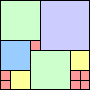 13 squares | 10 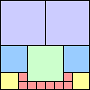 15 squares | 11 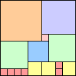 15 squares | 12 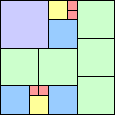 15 squares (Berend van der Zwaag) | 13 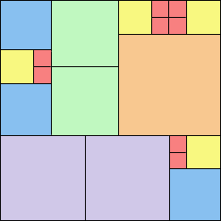 20 squares (Maurizio Morandi) |
| 14 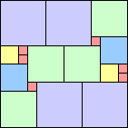 18 squares (George Sicherman) | 15 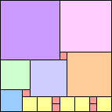 17 squares (Jeremy Galvagni) | 16 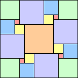 21 squares (George Sicherman) | 17 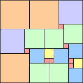 23 squares |
| 18 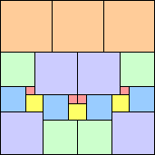 22 squares (Berend van der Zwaag) | 19 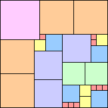 27 squares (Berend van der Zwaag) | 20 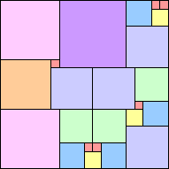 24 squares (Jeremy Galvagni) |
Jeremy Galvagni developed the idea of an efficiency ratio r(n) for a chain tiling of a square of side n: the area divided by the number of squares. He notes that r(kn) is an increasing function of k, since we can just tile a square of side kn with chain tilings of a square of side n. Presumably r(n) diverges to ∞, but how quickly?
Jeremy Galvagni also found a chain tiling of a square of side 100 containing 230 squares. Then Emilio Schiavi found a tiling using only 186 squares. Then in 2009, Berend van der Zwaag found a tiling using only 128 squares:
Finally, in 2011, Maurizio Morandi improved 2 parts of the tiling to reduce the number of squares:
Jeremy Galvagni also investigated triangle chain tilings. Here are his best results:
| n | 1 | 2 | 3 | 4 | 5 | 6 | 7 | 8 | 9 | 10 | 11 |
|---|---|---|---|---|---|---|---|---|---|---|---|
| Triangles | 1 | 4 | 6 | 7 | 11 | 14 | 16 | 12 | 19 | 18 | 26 |
2. Here are the best known small square bridges:
| 1 area 1 | 2 area 4 | 3 area 9 | 4 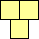 area 12 | 5 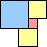 area 18 | 6 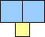 area 22 | 7 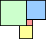 area 30 | 8 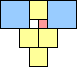 area 35 (Corey Plover) | 9 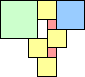 area 43 |
10 area 48 | 11 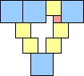 area 57 | 12 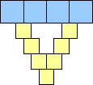 area 64 | 13 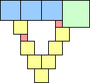 area 73 | 14 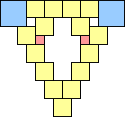 area 80 (Corey Plover) |
Corey Plover found this square bridge of width 100:
Corey Plover also sent me solutions for all n≤100 based on recursion. And he sent me an analysis of this problem when the squares do not have to lie on a grid. He used only unit squares to show that in this case, the area needed is no more than n+1+k2k where k= log2n
log2n -1.
-1.
3. Here are the best known small non-overlapping square coverings:
| 1 side 1 | 2 side 2 | 3 side 3 | 4 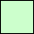 side 4 | 5 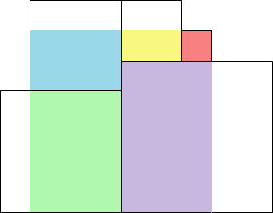 side 6 (Maurizio Morandi) | 6 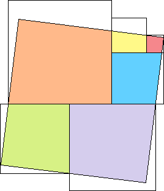 side 8.4744 (Maurizio Morandi) | 7 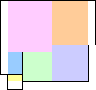 side 11 |
| 8 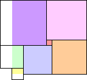 side 13 | 9 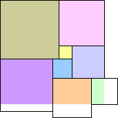 side 16 | 10 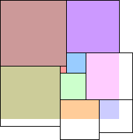 side 18 | 11 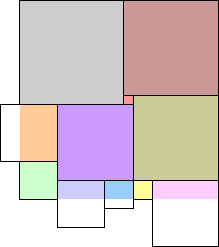 side 21 |
| 12 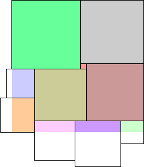 side 23 | 13 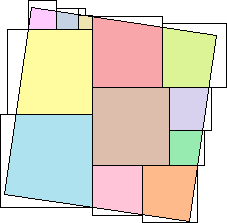 side 26.5583 (Maurizio Morandi) | 14 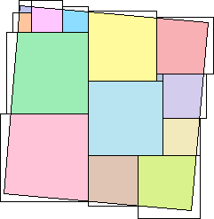 side 333/√122 = 30.1484 (Maurizio Morandi) |
| 15 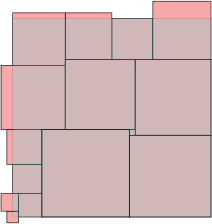 side 34 (Vedran Glišić) | 16 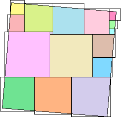 side 37.1557 (Maurizio Morandi) | 17 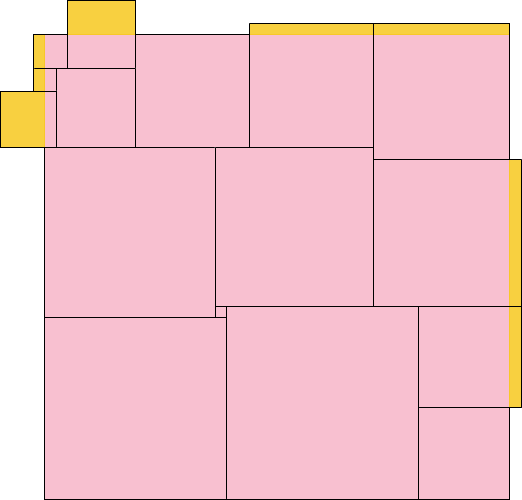 side 41 (Maurizio Morandi) |
| 18 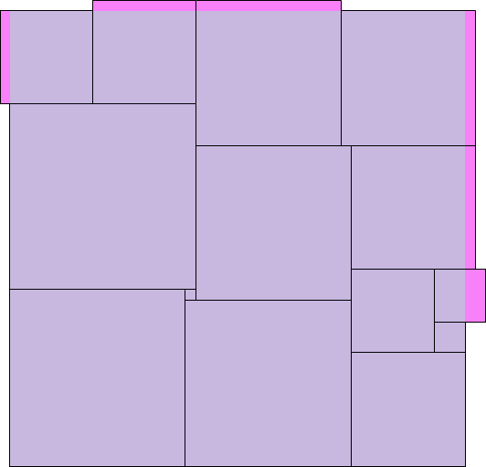 side 44 (Maurizio Morandi) | 19 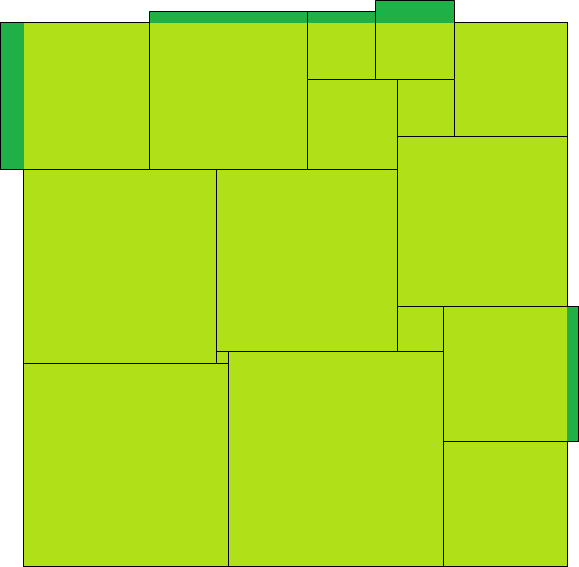 side 48 (Maurizio Morandi) | 20 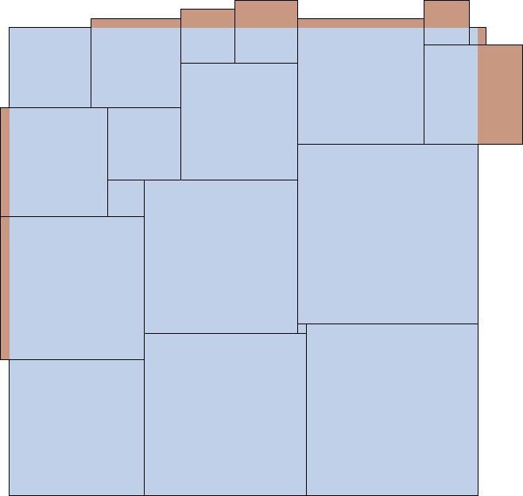 side 52 (Maurizio Morandi) |
| 21 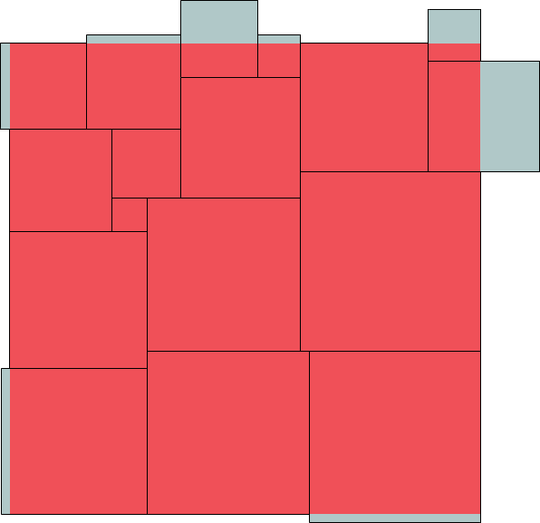 side 55 (Maurizio Morandi) | 22 side 59 (Maurizio Morandi) |
4. Here are the best known small sorted square packings:
2 2 wasted | 3 3 wasted | 4 5 wasted | 5 5 wasted | 6 8 wasted | 7 5 wasted | 8 9 wasted | 9 8 wasted |
| 10 8 wasted | 11 11 wasted | 12 13 wasted | 13 12 wasted | 14 13 wasted (VG) |
| 15 16 wasted (VG) | 16 14 wasted | 17 17 wasted (MM) |
| 18 21 wasted (MM) | 19 19 wasted (MM) | 20 17 wasted (MM) |
Corey Plover sent the following sorted square packing of a square of side 100.
In 2011, Vedran Glišić improved the packing:
Then a few weeks later, Maurizio Morandi did even better:
If you can extend any of these results, please e-mail me. Click here to go back to Math Magic. Last updated 11/12/11.